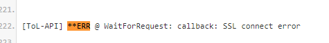

This sounds VERY similar to the problem you’re having with us.

Seems that your network is unable to connect securely.
You may, instead, want to do a full antivirus scan + malware scan (malware bytes or spybot search & destroy software choices). Our API is secure (https), yet your PC for whatever reason is trying to connect via HTTP (not secure). Best guess is that you have a virus, malware, or root kit trying to steal your passwords or something.
It’s VERY unusual to have an SSL (https) connect error (it’s a generic error) – try Googling it a bit to see what I mean. This would probably fix your Discord issue too. They also use secure connections (https/SSL/TLS)
To be honest, I’d reinstall Windows, if you know how.

 but since others don’t experience this, it’s most likely a personal network issue so we’ll need logs to continue ~
but since others don’t experience this, it’s most likely a personal network issue so we’ll need logs to continue ~